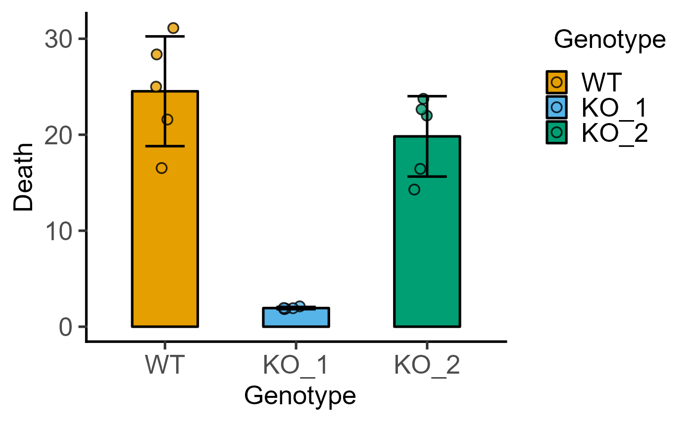
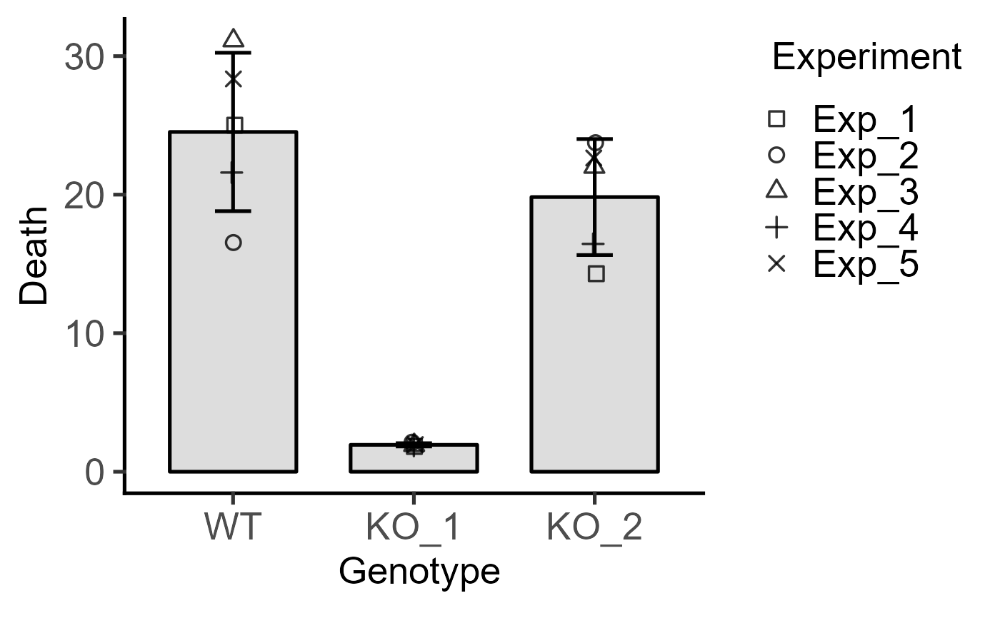
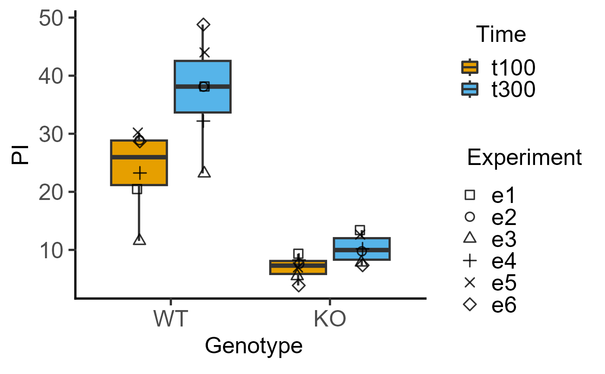
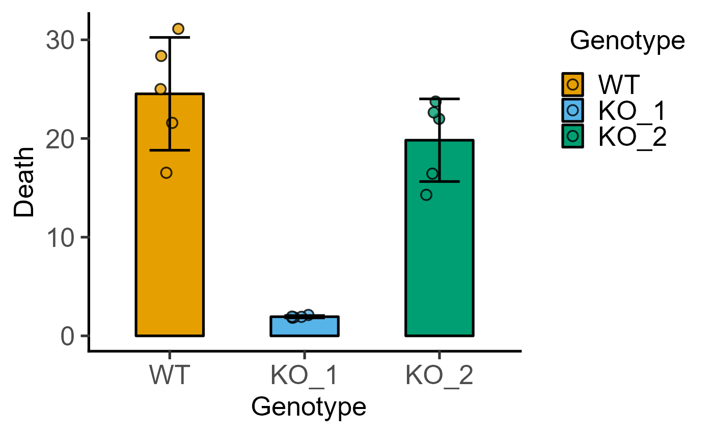
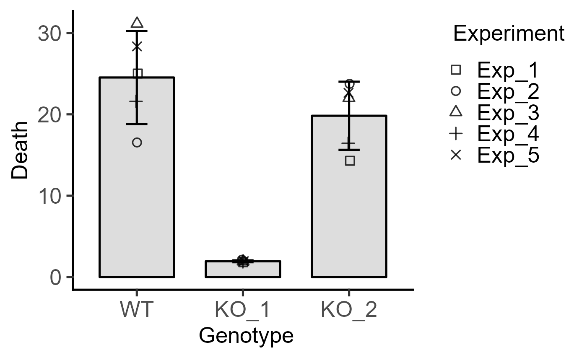
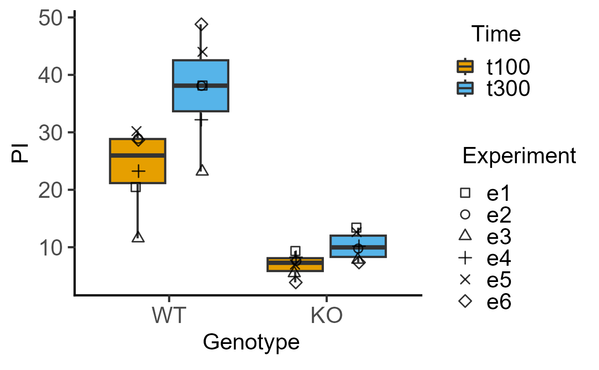

Plot a scatter graph with matched shapes on a bar plot using three variables.
Source:R/plot_3d_scatterbar.R
plot_3d_scatterbar.RdThe functions plot_3d_scatterbar, plot_3d_scatterbox, plot_4d_scatterbar and plot_4d_scatterbox are useful for plotting one-way or two-way ANOVA designs with randomised blocks or repeated measures. The blocks or subjects can be mapped to the shapes argument in both functions (up to 25 levels can be mapped to shapes; there will be an error if this number is exceeded). The 3d versions use the categorical variable (xcol) for grouping (e.g. one-way ANOVA designs), and 4d versions take an additional grouping variable (e.g. two-way ANOVA designs) that is passed to either boxes or bars argument.
plot_3d_scatterbar(
data,
xcol,
ycol,
shapes,
ewid = 0.2,
symsize = 2.5,
symthick = 1,
jitter = 0.1,
fontsize = 20,
b_alpha = 1,
s_alpha = 1,
ColSeq = TRUE,
ColPal = "all_grafify",
ColRev = FALSE,
TextXAngle = 0
)Arguments
- data
a data table, e.g. data.frame or tibble.
- xcol
name of the column with the categorical factor to be plotted on X axis.
- ycol
name of the column with quantitative variable to plot on the Y axis.
- shapes
name of the column with the second categorical factor, for example from a two-way ANOVA design.
- ewid
width of error bars, default set to 0.2.
- symsize
size of symbols, default set to 3.
- symthick
size of outline of symbol lines (
stroke = 1.5), default set to 1.5- jitter
extent of jitter (scatter) of symbols, default is 0.1. Increase to reduce symbol overlap, set to 0 for aligned symbols.
- fontsize
parameter of
base_sizeof fonts intheme_classic, default set to size 20.- b_alpha
fractional opacity of bars, default set to 1 (i.e. maximum opacity & zero transparency).
- s_alpha
fractional opacity of symbols, default set to 1 (i.e. maximum opacity & zero transparency).
- ColSeq
logical TRUE or FALSE. Default TRUE for sequential colours from chosen palette. Set to FALSE for distant colours, which will be applied using
scale_fill_grafify2.- ColPal
grafify colour palette to apply, default "all_grafify"; alternatives: "okabe_ito", "bright", "pale", "vibrant", "contrast", "muted" "dark", "light".
- ColRev
whether to reverse order of colour choice, default F (FALSE); can be set to T (TRUE).
- TextXAngle
orientation of text on X-axis; default 0 degrees. Change to 45 or 90 to remove overlapping text.
Value
This function returns a ggplot2 object of class "gg" and "ggplot".
Details
These functions rely on ggplot with geom_point and geom_bar (through stat_summary) or geom_boxplot geometries.
Variables other than the quantitative variable (ycol) will be automatically converted to categorical variables even if they are numeric in the data table.
Shapes are always plotted in black colour, and their opacity can be changed with the s_alpha argument and overlap can be reduced with the jitter argument. Other arguments are similar to other plot functions as briefly explained below.
Bars depict means using stat_summary with geom = "bar", fun = "mean" , and bar width is set to 0.7 (cannot be changed). Error bar width can be changed with the ewid argument.
Boxplot geometry uses geom_boxplot with position = position_dodge(width = 0.9), width = 0.6. The thick line within the boxplot depicts the median, the box the IQR (interquantile range) and the whiskers show 1.5*IQR.
In 4d versions, the two grouping variables (i.e. xcol and either boxes or bars) are passed to ggplot aesthetics through group = interaction{ xcol, shapes}.
Colours can be changed using ColPal, ColRev or ColSeq arguments.
ColPal can be one of the following: "okabe_ito", "dark", "light", "bright", "pale", "vibrant, "muted" or "contrast".
ColRev (logical TRUE/FALSE) decides whether colours are chosen from first-to-last or last-to-first from within the chosen palette.
ColSeq (logical TRUE/FALSE) decides whether colours are picked by respecting the order in the palette or the most distant ones using colorRampPalette.
All four functions can be expanded further, for example with facet_grid or facet_wrap.
Examples
#3d version for 1-way data with blocking
plot_3d_scatterbox(data = data_1w_death,
xcol = Genotype, ycol = Death, shapes = Experiment)
 #compare above graph to
plot_scatterbox(data = data_1w_death, xcol = Genotype, ycol = Death)

#4d version for 2-way data with blocking
plot_4d_scatterbox(data = data_2w_Tdeath,
xcol = Genotype,
ycol = PI,
boxes = Time,
shapes = Experiment)

plot_4d_scatterbar(data = data_2w_Festing,
xcol = Strain,
ycol = GST,
bars = Treatment,
shapes = Block)

#compare above graph to
plot_scatterbox(data = data_1w_death, xcol = Genotype, ycol = Death)

#4d version for 2-way data with blocking
plot_4d_scatterbox(data = data_2w_Tdeath,
xcol = Genotype,
ycol = PI,
boxes = Time,
shapes = Experiment)

plot_4d_scatterbar(data = data_2w_Festing,
xcol = Strain,
ycol = GST,
bars = Treatment,
shapes = Block)
